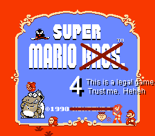
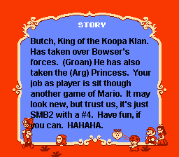
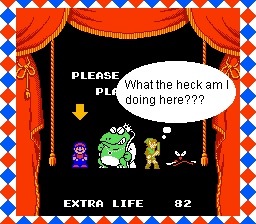
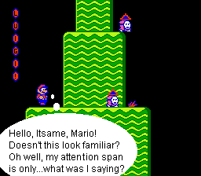
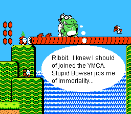
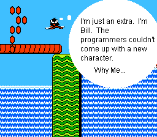
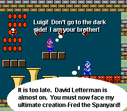
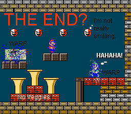

<HTML>

<!-- Mirrored from nc.metalman88.com/eluigi/2/comix.html by HTTrack Website Copier/3.x [XR&CO'2010], Fri, 13 Jan 2012 15:29:13 GMT -->
<HEAD>

<!--#include virtual="../ads.htm"-->

<!--This page was made by Jay Resop-->
<TITLE>Neglected Mario Character Comix</TITLE>
</HEAD>
<BODY BGCOLOR="FFFFFF" >
</BODY>
<H2><CENTER> Evil-Luigi </CENTER></H2><BR>
This story is about my new game, Super Mario 4!  It continues from the first week's story, sort of.  Enjoy.<BR><BR>
<P>
<BR>
<BR>
<BR>
<BR>
<BR>
<BR>
<BR>
<BR>
<BR>
<A HREF="../../index-2.html">Go back to NC</A><!--#include virtual="/copyright.html"-->
<!--#include virtual="/ads3.htm"-->
</BODY>

<!-- Mirrored from nc.metalman88.com/eluigi/2/comix.html by HTTrack Website Copier/3.x [XR&CO'2010], Fri, 13 Jan 2012 15:29:15 GMT -->
</HTML>
